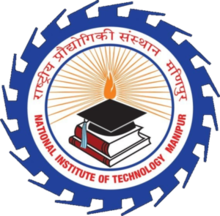
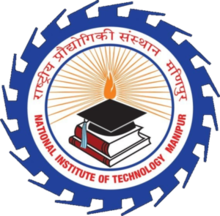

Welcome to QUBIT Coding Club: NIT MANIPUR
AIM and GOALS of Qubit:
Who We Are
 

Coders. Problem solvers. Computer geeks. Developers. Technical architects.
We are a close knit group of computer science enthusiasts that enjoy coding and
hope to make a difference with our software
What We Do
As the official Web Team and programming club of NIT Manipur, we develop and maintain the institute's official website and handle web related activities of the institute's festivals including the cultural fest OUGRI, There is no technical fest in our college but now we are going to organised it, . Our members are constantly working with cutting edge technology and software on their exciting personal projects. We love Hackathons and spend a lot of our time working on new ideas. The club also conducts hackathons on an annual basis.